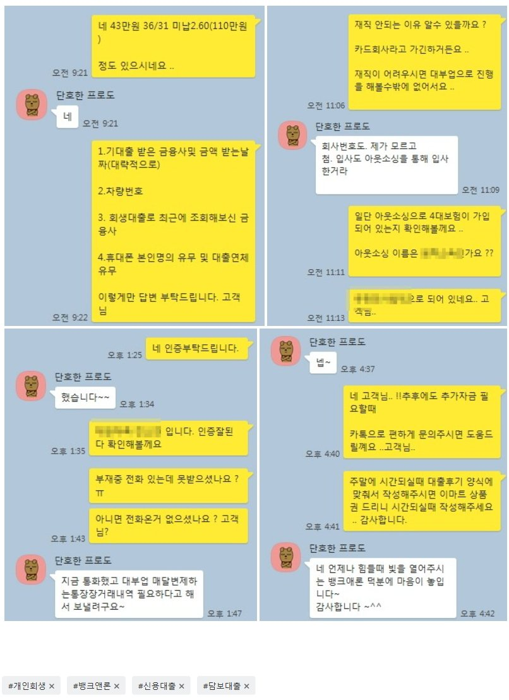

4대보험 직장인 회생자 대환및 미납납부조건 1500만원 대출 사례!!
안녕하세요 뱅크앤론 김한수 상담사입니다. 어느덧 10월의 마지막 주네요 .. 전 국민 백신 접종률이 70% 이상이여서 11월달에는 위드 코로나로 전환 될듯합니다. :)) 빨리 마스크 벗는 날이 왔으면 하네요 .. !!
오늘은 저희 뱅크앤론을 과거에 이용해주신 고객님 문의 사례 안내해드리겠습니다.
고객님 경우 재직4개월 여성이시고 변제금 43만원 36/31 미납 2.60(110만원) 변제금이 미납포함 약 325만원이 남았습니다.
고객님 현재 기대출로는 차량대출및 신용대출 해서 채무는 2곳이고 기대출은 약 700만원 정도 가지고 있었습니다.
고객님 목적은 대환및 추가자금이였습니다. 금융사 통해서 알아본 결과
금융사2곳 대환및 미납변제금및 총남은 변제금까지 대환조건으로 해서 1500만원 승인 도움드렸습니다.
1000만원 정도 대환하시고 남은 500만원은 면책되기 전까지 생활자금 도움드렸습니다.
아래는 저와 고객님의 대화내용입니다. 회생대출에 대해서 궁금하신점 있으실때 문의주시면 상담통해서 도움드리겠습니다. 이번한주도 화이팅하고 모두 즐거운 월요일 보내세요 ..^^ 감사합니다.
